Tasheel Post design system
One set of colours, type, icons and components behind two parcel delivery apps, so a status, a card or a button looks and behaves the same everywhere.
Designer: foundations and components
2023–2024
Tasheel Post customer and driver apps
Figma
Why a system
Two apps, one status language.
Senders and drivers use different apps but look at the same parcel. Shared foundations and components meant a shipment status, a button or a tab reads the same on both sides.
Colour
Eight scales, each step checked for contrast.
- Brand: primary blue for trust, with a lighter secondary blue, green and yellow.
- Status: success, warning and error scales, plus neutrals for text and surfaces.
- Documented: every swatch lists its hex and RGB values and its contrast ratio against black and white, with the AA or AAA result.
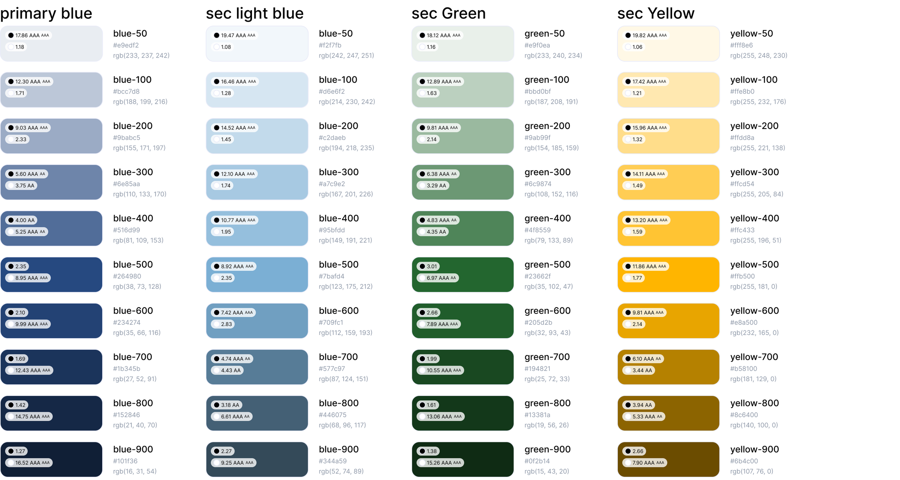
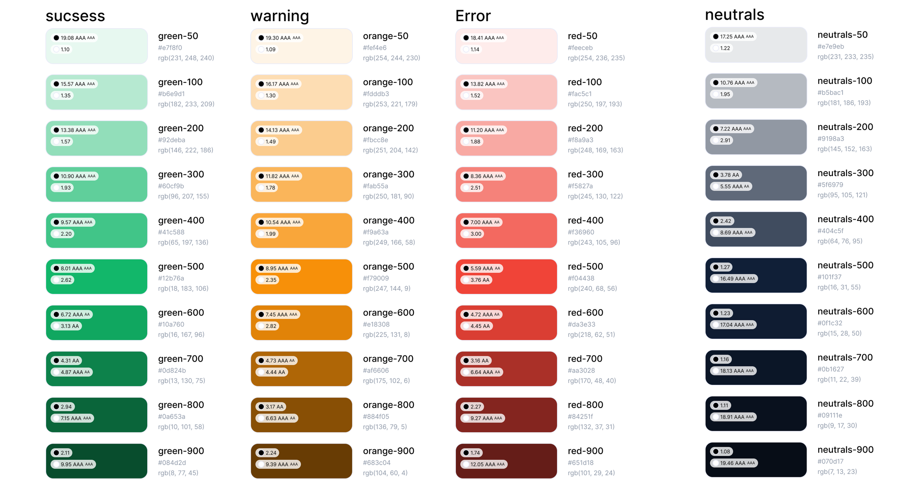
Typography
Noto Sans, one scale, four weights.
Eleven sizes, from Display 2xlarge down to Text xsmall, each in Regular, Medium, Semibold and Bold. Headings, labels and body text all pull from the same table.
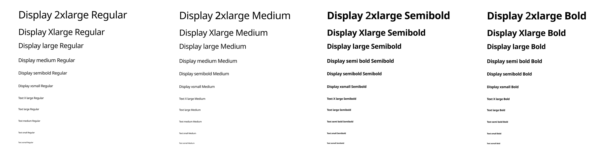
Icons
An outline icon set with one stroke weight.
Arrows, actions, status, devices, communication and delivery icons share one outline style, so they stay quick to recognise at small sizes.
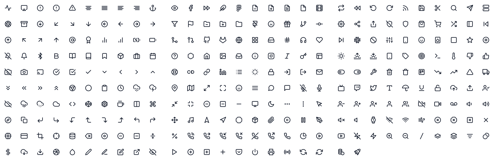
Components
Small, reusable pieces with defined states.
Selection controls, chips and steppers
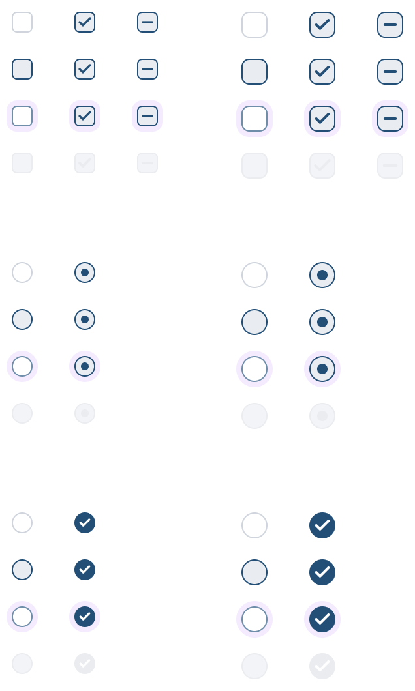
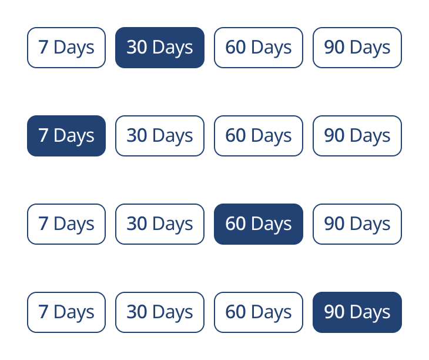
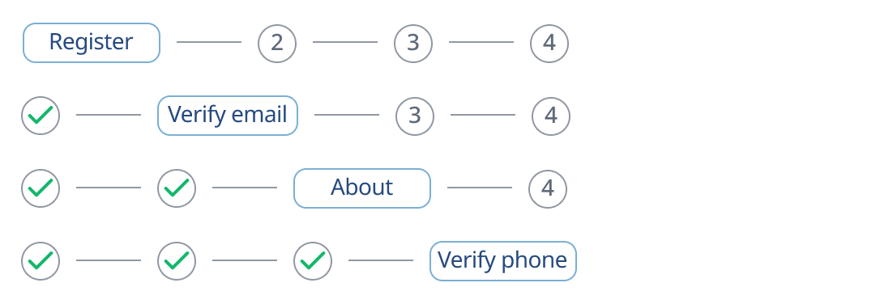
Cards
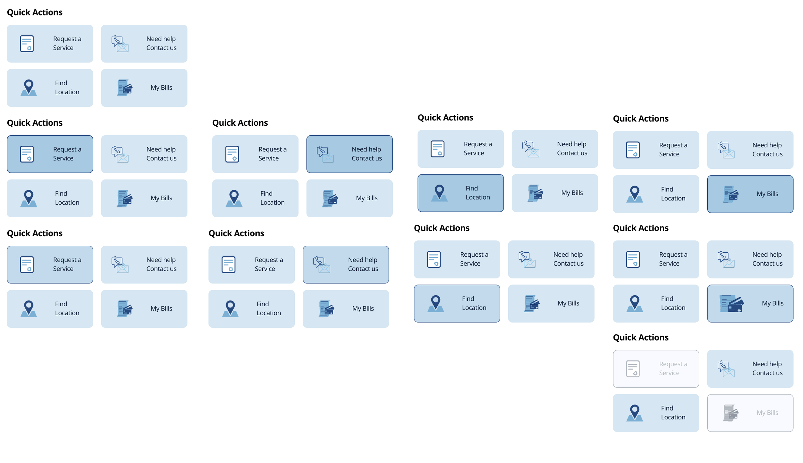
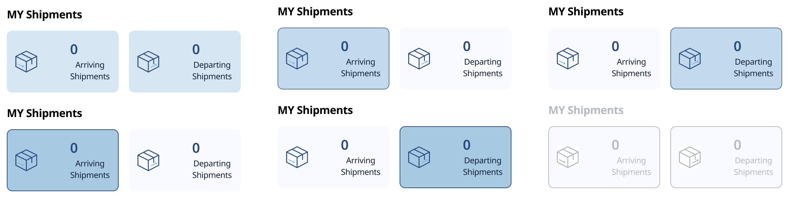
Navigation, badges and banners
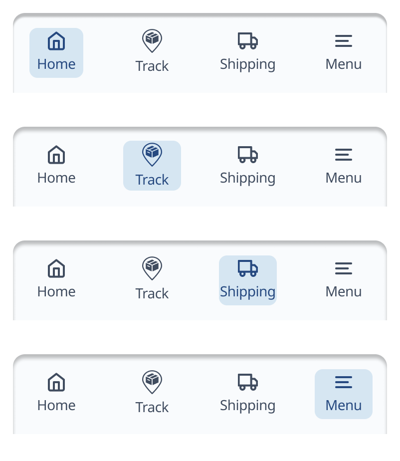
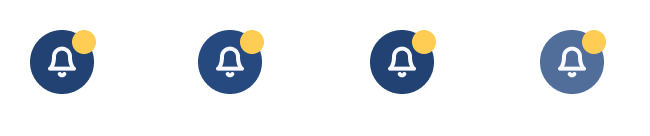
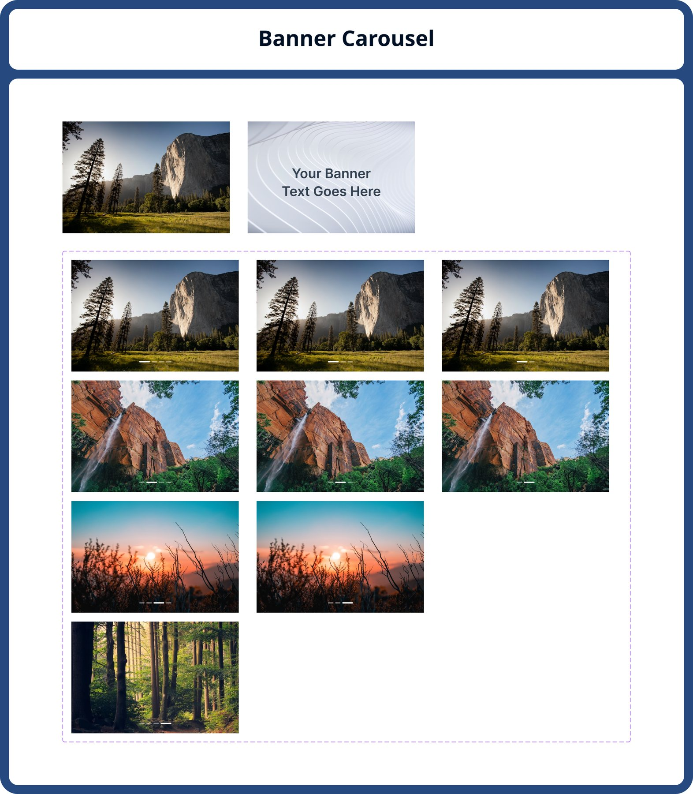
Decisions
Key design decisions
| Decision | Why |
|---|---|
| Scales from 50 to 900 with contrast shown | Anyone can pick an accessible pair without checking by hand |
| Blue primary, yellow accent | Blue reads as trust; yellow draws the eye to badges |
| Separate success, warning and error scales | Status colours stay distinct from the brand blue |
| One type family with a fixed scale | Consistent hierarchy; no one-off sizes |
| Outline icons at one weight | Quick recognition at small sizes |
| Every control has a focus and disabled state | Usable by keyboard and clear when unavailable |
Outcome
A shared kit for two apps.
- Foundations and components documented once in Figma and reused across the customer and driver apps.
- Colour pairs come with contrast results, so accessibility decisions are visible.
- Components cover selection, cards, navigation, badges and banners, each with its states.
What I learned: documenting states early, including focus and disabled, saved rework later, because every screen already had the right variant to reach for.
See the apps this system was built for: Tasheel Post case study →
Next case study
Designsmith Employee App →